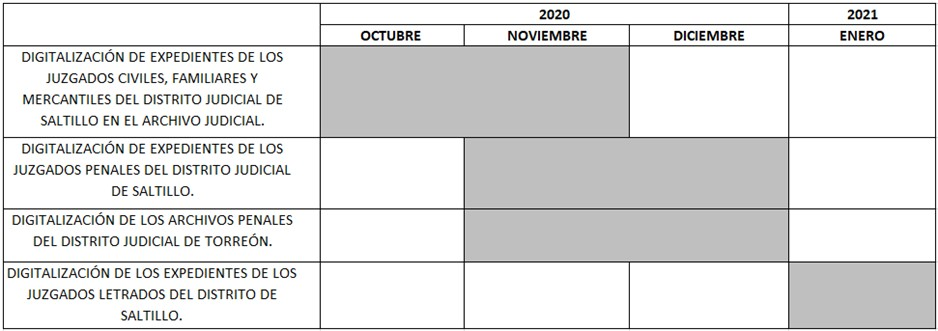
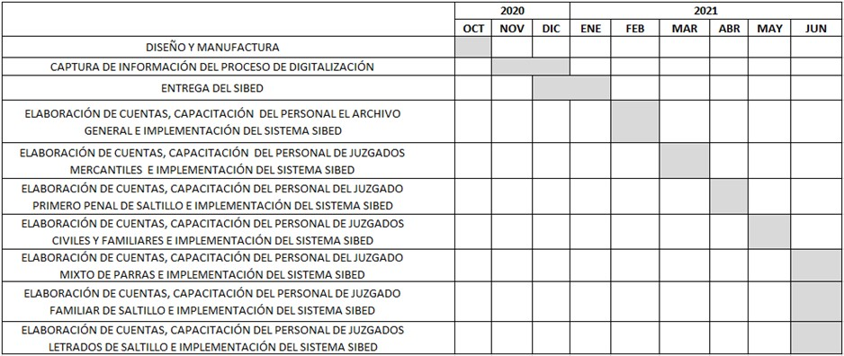
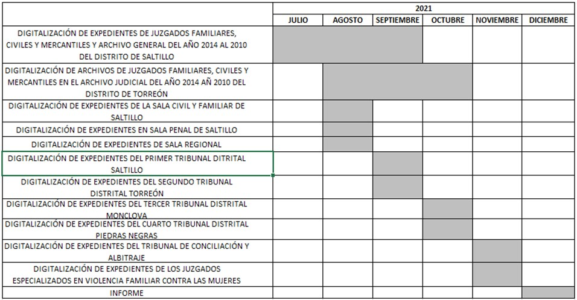
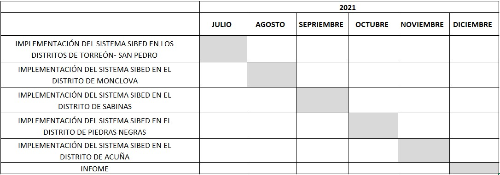

Key: AC20210715B
I. ANTECEDENTES Y FACULTADES DEL CONSEJO DE LA JUDICATURA
1. Antecedentes
El 25 de junio del presente año la Secretaría de Acuerdo y Trámite del Consejo de la Judicatura del Estado (en adelante la ‘Secretaría’) recibió tres oficios suscritos por el Director del Archivo Judicial General del Poder Judicial del Estado (en adelante el ‘director’).
En el oficio /1309/2021, de fecha 09 de junio de 2021, el director presentó un informe sobre el primer periodo de implementación del SIBED[[1](#_ftn1) con apoyo de un cronograma que explica esta actividad.
En el oficio /1310/2021, de fecha 09 de junio de 2021, el director solicitó al Magistrado Presidente del Tribunal Superior de Justicia y del Consejo de la Judicatura del Estado, por un lado, que se aprobara la ampliación del SIBED para los órganos de segunda instancia, en virtud de haberse concluido la primera etapa de implementación de este sistema SIBED; por el otro pidió que se aprobara extender el proceso de digitalización de los años 2010 al 2014 de los órganos de jurisdiccionales de primera instancia de los distritos judiciales de Saltillo y Torreón.
Para esta última actividad, el director solicitó que se aprobaran ciertas medidas de apoyo por parte de los órganos jurisdiccionales.
En el último de los oficios (AG/1251/2021), de fecha 27 de mayo de 2021, el director solicitó la integración de una Comisión Interdisciplinaria de Archivos del Poder Judicial del Estado de Coahuila de Zaragoza, así como la aprobación de sus reglas de operación que propuso en este último oficio.
[1] Por SIBED se entiende el Sistema Integral de Búsqueda de Expedientes y Digitalización.
Una vez recibidos estos oficios, el Consejero Presidente del Consejo de la Judicatura emitió un acuerdo sobre cada oficio el 29 de junio de este año. En los tres acuerdos tomó conocimiento del informe y las solicitudes del director y decidió que el Pleno del Consejo de la Judicatura resolviera lo conducente.
2. Facultades del Consejo de la Judicatura del Estado
El Consejo de la Judicatura del Estado de Coahuila de Zaragoza es el órgano del Poder Judicial del Estado que tiene como funciones la administración, vigilancia y disciplina de los órganos jurisdiccionales, según lo establece el artículo 143 de la Constitución Política del Estado de Coahuila de Zaragoza.
De acuerdo con el artículo 57, fracciones VIII y XI, de la Ley Orgánica del Poder Judicial del Estado de Coahuila de Zaragoza, el Consejo de la Judicatura tiene las siguientes atribuciones: supervisar el funcionamiento de los órganos que integran al Poder Judicial y dictar las providencias necesarias para el mejoramiento de la administración de justicia; así como expedir los acuerdos necesarios para regular el funcionamiento del Poder Judicial y de sus órganos.
El 29 de octubre de 2020 el Consejo de la Judicatura del Estado emitió el acuerdo C-127/2020, mediante el cual aprobó la implementación del SIBED. En este acuerdo, el Consejo estableció que el Archivo Judicial General de este poder público informaría a esta instancia sobre la implementación del SIBED y que el propio Consejo de la Judicatura emitiría los acuerdos generales para tal implementación.
En consecuencia, el Consejo de la Judicatura del Estado cuenta con las facultades para emitir el presente acuerdo a fin de dar seguimiento a la implementación del SIBED y decidir la aprobación de la creación de la Comisión Interdisciplinaria de Archivos y de sus reglas de operación.
II. ESTUDIO SOBRE LOS PLANTEAMIENTOS DEL DIRECTOR DEL ARCHIVO JUDICIAL GENERAL
1. Informe sobre la primera etapa de implementación del SIBED
Este Consejo de la Judicatura, a través del Pleno, toma conocimiento del informe presentado por el director sobre la primera etapa de la implementación del SIBED, consistente en la digitalización de expedientes en el Archivo Judicial General y en los juzgados de primera instancia de los distritos judiciales de Saltillo y Torreón. Las actividades sobre ello se realizaron de acuerdo con el siguiente cronograma.

Fuente: Archivo Judicial General.
El Consejo de la Judicatura toma nota de las actividades que el director llevó a cabo en la digitalización de los expedientes, las cuales consisten en lo siguiente:
i) Digitalización de los 200,000 expedientes de los distritos judiciales de Saltillo y Torreón, relativos a las materias civil, familiar, mercantil y penal. Por lo que hace a la materia penal, se digitalizaron los expedientes de los juzgados tradicionales de estos distritos judiciales que corresponden a los años del 2000 al 2020.
ii) En específico, se digitalizó la carátula y las primeras cinco hojas de cada expediente.
Se pegaron de dos a tres códigos QR por expediente para que permitan identificar y rastrear los datos y la información del expediente a través del número de este código.
Las actividades de digitalización en el Archivo Judicial General y en los juzgados de primera instancia de estos distritos judiciales referidos se realizaron conforme al siguiente calendario:

Fuente: Archivo Judicial General.
Respecto al presente informe, el Consejo de la Judicatura saluda el trabajo que se ha venido haciendo por parte del Archivo Judicial General y exhorta a su personal para que continúe uniendo esfuerzos para finalizar con éxito esta actividad que contribuye al mejoramiento y a la modernización de la administración de justicia.
El Consejo instruye a la Secretaría para que se resguarde el informe en los archivos de este órgano colegiado.
1. Autorización de la segunda etapa de implementación del SIBED
El director solicitó la ampliación de la implementación del sistema SIBED en las Salas del Tribunal Superior de Justicia del Estado, en los cuatro tribunales distritales, en el Tribunal de Conciliación y Arbitraje y en los procedimientos especiales de violencia familiar de los que conocen los jueces y las juezas especializadas en violencia familiar contra las mujeres. El calendario para llevar a cabo esta implementación es el siguiente:

Fuente: Archivo Judicial General.
Asimismo, esta segunda etapa también abarcará la digitalización de expedientes en los demás distritos judiciales del Estado, además de los de Saltillo y Torreón, de conformidad con la tabla que se muestra a continuación:

Fuente: Archivo Judicial General.
Para realizar las actividades referidas, el director solicitó que se autorizaran las siguientes medidas:
i) Habilitar un espacio de trabajo que cuente con acceso controlado con llave.
ii) Habilitar un horario de trabajo de las 9 horas a las 16 horas, a fin de que el personal establecido pueda llevar a cabo la digitalización de los expedientes.
iii) Designar por parte de los órganos jurisdiccionales a una persona que funja como enlace y responsable del SIBED con el Archivo Judicial General, a fin de que auxilie en las labores de digitalización.
iv) Autorizar el levantamiento de datos como los siguientes: nombre completo y correo electrónico del personal del órgano jurisdiccional de que se trate, como son jueces, juezas, secretarios, secretarias y archivistas, a fin de generar sus respectivos usuarios y contraseñas para operar el SIBED.
Por último, el director solicitó que en esta segunda etapa se autorizara ampliar el proceso de digitalización de expedientes de los distritos judiciales de Saltillo y Torreón para abarcar aquellos relativos a los años 2010 y 2014.
Al respecto, el Consejo de la Judicatura recuerda que en el acuerdo C-127/2020 estableció que el SIBED es una herramienta que forma parte del sistema digital confiable al que se refiere el artículo 154 de la Constitución local, pues integra el sistema Poder en línea que se conforme, a su vez, de otros mecanismos como el Buzón electrónico de demandas y promociones (BEDP), el sistema de citas mediante plataforma en línea y el expediente virtual 2.0 (EV2.0).
El Consejo reconoce que la digitalización de expedientes y carpetas administrativas, es un avance importante para el mejoramiento de la administración de justicia, pues permitirá reforzar la organización y ubicación de los documentos judiciales y, aunado a ello, evitará su perdida y extravío. La digitalización también abonará a la creación de una base de datos integral sobre los expedientes judiciales de todo el Poder Judicial del Estado.
Por ello, considera importante continuar avanzando en la implementación del SIBED y en la digitalización de los expedientes de todos los juzgados y tribunales.
En consecuencia, el Consejo aprueba las actividades y el calendario propuesto para la segunda etapa de la implementación del SIBED, así como la ampliación de la digitalización a que se refiere el director y, por último, las medidas que faciliten el trabajo del Archivo Judicial General.
En este sentido, el Consejo instruye a los órganos jurisdiccionales del Poder Judicial del Estado para que tomen las medidas referidas a fin de auxiliar al Archivo Judicial General en la implementación del SIBED.
2. Reglas de Operación de la Comisión Interdisciplinaria de Archivos del Poder Judicial del Estado de Coahuila de Zaragoza
El director propuso la creación de una Comisión Interdisciplinaria de Archivos del Poder Judicial del Estado y la aprobación de reglas de operación que regulen su funcionamiento y su organización.
Este Consejo considera viable esta propuesta que permitirá al Poder Judicial del Estado continuar avanzando en la implementación de la política pública nacional en materia archivística. En efecto, en el marco normativo nacional se prevé la figura de un grupo interdisciplinario.
En la fracción XXXV, del artículo 4, de la Ley General de Archivos, se define al grupo interdisciplinario como «el conjunto de personas que deberá estar integrado por el titular del área coordinadora de archivos; la unidad de transparencia; los titulares de las áreas de planeación estratégica, jurídica, mejora continua, órganos internos de control o sus equivalentes; las áreas responsables de la información, así como el responsable del archivo histórico, con la finalidad de coadyuvar en la valoración documental».
El propósito de este grupo interdisciplinario es coadyuvar en el análisis de los procesos y procedimientos institucionales que dan origen a la documentación que integran los expedientes de cada serie documental, con el fin de colaborar con las áreas o unidades administrativas productoras de la documentación en el establecimiento de los valores documentales, vigencias, plazos de conservación y disposición documental durante el proceso de elaboración de las fichas técnicas de valoración de la serie documental y que, en conjunto, conforman el catálogo de disposición documental[1].
El artículo 52 de la Ley General de Archivos establece como actividades a realizar por este grupo, entre otras, las siguientes: formular opiniones, referencias técnicas sobre valores documentales, pautas de comportamiento y recomendaciones sobre la disposición documental de las series documentales; y recomendar que se realicen procesos de automatización en apego a lo establecido para la gestión documental y administración de archivos.
Por su parte, los Lineamientos para la Organización y Conservación de los Archivos también prevén la constitución de grupos interdisciplinarios en los entes públicos obligados, como parte de las políticas y criterios para la sistematización y digitalización, así como para la custodia y conservación de los archivos en posesión de los sujetos obligados[2].
De acuerdo con la propuesta del Director del Archivo Judicial General, la Comisión tendría por objeto establecer políticas, criterios, principios y bases generales para la organización, conservación, administración, preservación y valoración de los archivos físicos y electrónicos del Poder Judicial del Estado.
La Comisión se integraría de la siguiente manera:
- Magistrado Presidente del Tribunal Superior de Justicia y del Consejo de la Judicatura del Estado.
Un Magistrado del Tribunal Superior de Justicia del Estado.
- Un Magistrado de Tribunal Distrital.
- Un Juez de Primera Instancia.
- La persona Secretaria de Acuerdo y Trámite del Consejo de la Judicatura del Estado.
- La persona Oficial Mayor del Poder Judicial del Estado.
- La persona titular de la Secretaría Técnica y de Transparencia.
- La persona Visitadora Judicial General.
- La persona encargada en materia de transparencia y de acceso a la información pública.
- La persona Coordinadora de Archivos, quien sería el o la Directora del Archivo Judicial General.
Con la creación de la Comisión Interdisciplinaria se dará un paso importante en materia archivística y en la implementación de los estándares jurídicos establecidos en la Ley General de Archivos. Este órgano será especializado y focalizado para atender la política pública en esta asignatura en coordinación con el Archivo Judicial General.
I. ACUERDO
Por lo anteriormente expuesto, quienes integran el Pleno del Consejo de la Judicatura del Estado acuerdan:
Primero. Se toma conocimiento de los oficios suscritos por el Director del Archivo Judicial General.
Segundo. Se toma conocimiento del oficio del informe relativo a la primera etapa de implementación del SIBED.
Tercero. Se aprueba la propuesta de la segunda etapa de implementación del SIBED, conforme a los términos establecidos en el apartado II. 2 del presente acuerdo.
Se autoriza ampliar el proceso de digitalización de expedientes de los distritos judiciales de Saltillo y Torreón para abarcar aquellos relativos a los años 2010 y 2014.
Se autorizan las cuatro medidas propuestas por el director para la colaboración en la digitalización de los expedientes.
Por ello, se instruye a los órganos jurisdiccionales del Poder Judicial del Estado para que tomen las medidas referidas a fin de auxiliar al Archivo Judicial General en la implementación del SIBED.
Cuarto. Se aprueba la creación de la Comisión Interdisciplinaria de Archivos del Poder Judicial del Estado de Coahuila de Zaragoza.
Se aprueban las Reglas de Operación de la Comisión Interdisciplinaria de Archivos del Poder Judicial del Estado de Coahuila de Zaragoza, las cuales se adjuntan al presente acuerdo como anexo.
Se instruye al Director del Archivo Judicial General para que tome las medidas necesarias para conformar la Comisión Interdisiciplinaria de Archivos y esté en posibilidades de llevar a cabo su integración y su funcionamiento.
Quinto. Se instruye al Archivo Judicial General para que realice las gestiones necesarias para el debido cumplimiento del presente acuerdo.
Sexto. Se instruye a la Secretaría de Acuerdo y Trámite del Consejo de la Judicatura para que comunique el presente acuerdo al Archivo Judicial General, así como a los juzgados y tribunales del Poder Judicial del Estado de Coahuila de Zaragoza.
Séptimo. Se instruye a la Secretaría de Acuerdo y Trámite para que realice las gestiones necesarias para la debida publicación de este acuerdo en el sitio web oficial del Poder Judicial del Estado.
MTRO AGHG.
Así lo acordaron y firmaron los miembros integrantes del Consejo de la Judicatura que estuvieron presentes en sesión celebrada el día quince de julio de dos mil veintiuno, por ante la Secretaria de Acuerdo y Trámite que autoriza y da fe.
[R Ú B R I C A]
MGDO. MIGUEL FELIPE MERY AYUP
PRESIDENTE DEL TRIBUNAL SUPERIOR DE JUSTICIA
Y DEL CONSEJO DE LA JUDICATURA DEL ESTADO
[R Ú B R I C A]
MGDO. HOMERO RAMOS GLORIA
CONSEJERO DEL TRIBUNAL SUPERIOR DE JUSTICIA
[R Ú B R I C A]
MGDO. LUIS MARTÍN GRANADOS SALINAS
CONSEJERO DE TRIBUNAL DISTRITAL
[R Ú B R I C A]
MTRO. CARLOS ALBERTO ESTRADA FLORES
CONSEJERO DEL PODER EJECUTIVO
[R Ú B R I C A]
LIC. OBED SANTIBAÑEZ CABRALES
CONSEJERO DE JUZGADO DE PRIMERA INSTANCIA
[R Ú B R I C A]
DIP. LIC. LIZBETH OGAZÓN NAVA
CONSEJERA DEL PODER
LEGISLATIVO
[R Ú B R I C A]
MTRA. ELSA MARÍA DEL PILAR FLORES VELÁZQUEZ
SECRETARIA DE ACUERDO Y TRÁMITE DEL
CONSEJO DE LA JUDICATURA DEL ESTADO
[1] Artículo 50 de la Ley de General de Archivos.
[2] Estos lineamientos se aprobaron mediante el acuerdo de fecha 13 de abril de 2016 emitido por el Consejo Nacional del Sistema Nacional de Transparencia, Acceso a la Información Pública y Protección de Datos Personales. Se publicaron en el Diario Oficial de la Federación el 04 de mayo de 2016.
[3] Estos lineamientos se aprobaron mediante el acuerdo de fecha 13 de abril de 2016 emitido por el Consejo Nacional del Sistema Nacional de Transparencia, Acceso a la Información Pública y Protección de Datos Personales. Se publicaron en el Diario Oficial de la Federación el 04 de mayo de 2016.